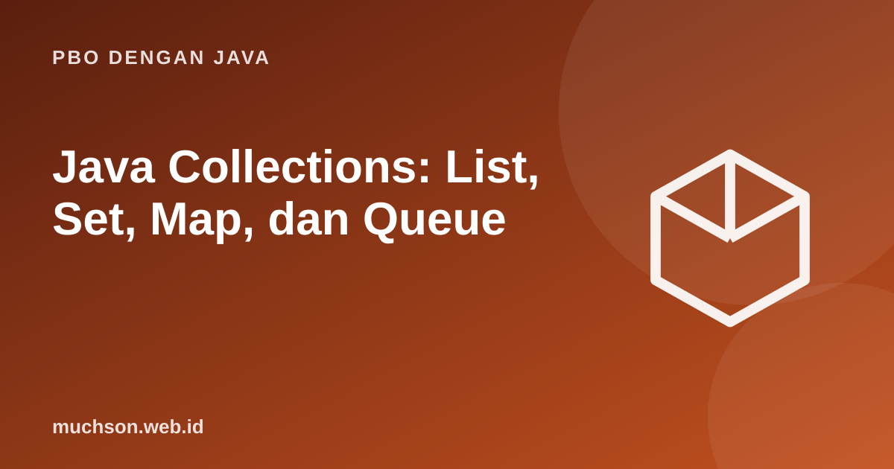

Beranda › Artikel › PBO dengan Java
PBO dengan JavaJava Collections: List, Set, Map, dan Queue
Hampir semua program Java memakai koleksi. Pustaka standar menyediakan hierarki interface dan implementasi dengan karakteristik berbeda. Memilih yang tepat bisa berarti selisih antara program yang cepat dan program yang merayap.
Sebaiknya sudah paham: array dan ArrayList, interface

Tujuan belajar
Setelah membaca dan mencoba materi ini, Anda mampu:
- menggambarkan hierarki interface Collection dan Map
- memakai List, Set, Map, Queue, dan Deque
- memilih implementasi berdasarkan kompleksitas dan urutan
- menelusuri koleksi dengan for-each dan Iterator
- menjelaskan peran equals dan hashCode pada HashMap dan HashSet
Peta besar
| Interface | Implementasi umum | Sifat | Operasi utama |
|---|---|---|---|
| List | ArrayList, LinkedList | Berurutan, boleh duplikat | get(i) O(1) pada ArrayList |
| Set | HashSet / LinkedHashSet / TreeSet | Tanpa duplikat; Hash tak berurutan, Linked urut sisip, Tree terurut | contains O(1) Hash, O(log n) Tree |
| Map | HashMap / LinkedHashMap / TreeMap | Kunci unik → nilai | get O(1) Hash, O(log n) Tree |
| Queue/Deque | ArrayDeque, PriorityQueue | FIFO/LIFO, atau berdasarkan prioritas | offer/poll O(1) atau O(log n) untuk PriorityQueue |
List, Set, dan Map beraksi
import java.util.*;
public class Main {
public static void main(String[] args) {
List<String> daftar = new ArrayList<>(List.of("kopi", "teh", "kopi", "susu"));
Set<String> unik = new LinkedHashSet<>(daftar); // hapus duplikat, jaga urutan
Set<String> terurut = new TreeSet<>(daftar); // terurut abjad
System.out.println(daftar + " -> " + unik + " | " + terurut);
Map<String, Integer> hitung = new TreeMap<>();
for (String s : daftar) hitung.merge(s, 1, Integer::sum); // hitung kemunculan
System.out.println(hitung);
for (Map.Entry<String, Integer> e : hitung.entrySet())
System.out.println(e.getKey() + " muncul " + e.getValue() + "x");
System.out.println(hitung.getOrDefault("coklat", 0));
System.out.println(hitung.containsKey("teh"));
}
}[kopi, teh, kopi, susu] -> [kopi, teh, susu] | [kopi, susu, teh]
{kopi=2, susu=1, teh=1}
kopi muncul 2x
susu muncul 1x
teh muncul 1x
0
true
Queue, Deque, dan PriorityQueue
import java.util.*;
public class Main {
public static void main(String[] args) {
Deque<Integer> tumpuk = new ArrayDeque<>(); // dipakai sebagai stack
tumpuk.push(1); tumpuk.push(2); tumpuk.push(3);
System.out.println(tumpuk.pop() + " " + tumpuk.peek());
Queue<String> antre = new ArrayDeque<>(); // dipakai sebagai queue
antre.offer("Ani"); antre.offer("Budi");
System.out.println(antre.poll() + " " + antre.size());
PriorityQueue<int[]> tugas = new PriorityQueue<>((a, b) -> a[0] - b[0]); // prioritas terkecil dulu
tugas.add(new int[]{3, 30}); tugas.add(new int[]{1, 10}); tugas.add(new int[]{2, 20});
while (!tugas.isEmpty()) System.out.print(tugas.poll()[1] + " ");
System.out.println();
}
}3 2
Ani 1
10 20 30
Mengapa equals dan hashCode penting
import java.util.*;
class KunciSalah {
final int id;
KunciSalah(int id) { this.id = id; }
}
class KunciBenar {
final int id;
KunciBenar(int id) { this.id = id; }
@Override public boolean equals(Object o) { return o instanceof KunciBenar k && k.id == id; }
@Override public int hashCode() { return Integer.hashCode(id); }
}
public class Main {
public static void main(String[] args) {
Map<KunciSalah, String> a = new HashMap<>();
a.put(new KunciSalah(1), "satu");
System.out.println("tanpa equals/hashCode : " + a.get(new KunciSalah(1)));
Map<KunciBenar, String> b = new HashMap<>();
b.put(new KunciBenar(1), "satu");
System.out.println("dengan equals/hashCode: " + b.get(new KunciBenar(1)));
}
}tanpa equals/hashCode : null
dengan equals/hashCode: satu
Jebakan
Jangan mengubah isi objek yang dipakai sebagai kunci HashMap atau elemen HashSet dengan cara yang memengaruhi hashCode. Objek akan "hilang" di embernya. Pakai kunci immutable seperti String atau record.
Latihan mandiri2. Hapus duplikat dari List
Coba kerjakan dulu sebelum membuka jawaban.
1. Hitung frekuensi kata pada kalimat dengan Map.
Pisahkan dengan split, lalu hitung.merge(kata, 1, Integer::sum).
2. Hapus duplikat dari List sambil menjaga urutan.
new ArrayList<>(new LinkedHashSet<>(daftar)).
3. Kapan LinkedHashMap berguna?
Saat butuh urutan penyisipan atau urutan akses (misalnya cache LRU).
4. Mengapa iterasi HashMap tidak punya urutan terjamin?
Urutan bergantung pada hash dan kapasitas tabel, bukan urutan penyisipan.
Ringkasan
- Collection (List, Set, Queue) dan Map memiliki beberapa implementasi.
- Pilih Hash untuk kecepatan, Tree untuk urutan terurut, Linked untuk urutan sisip.
- Hash memerlukan equals dan hashCode yang konsisten.
- ArrayDeque untuk stack dan queue; PriorityQueue untuk prioritas.
Tanya jawab
Mengapa List<int> tidak bisa?
Generics hanya menerima tipe referensi; gunakan List.
Apakah HashMap aman untuk banyak thread?
Tidak. Pakai ConcurrentHashMap untuk akses bersamaan.
Apa bedanya Comparable dan Comparator?
Comparable didefinisikan di class itu sendiri (urutan alami); Comparator di luar, bisa banyak aturan urutan.
Referensi
- Oracle: Collections (Java Tutorials)
- Java SE API: java.util
- Joshua Bloch, Effective Java (edisi ke-3, Addison-Wesley, 2018)
- Java SE API Documentation